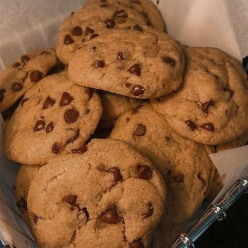

Baking
Warm up the house and indulge in delicious treats with these recipes:

Cookies
Ingredients: Flour, sugar, butter, chocolate chips.
Instructions: Preheat oven, mix ingredients, shape into cookies, bake, and enjoy!

Cake
Ingredients: Flour, sugar, eggs, butter, vanilla extract.
Instructions: Prepare batter, bake, cool, frost, and enjoy!